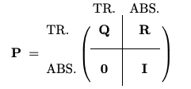
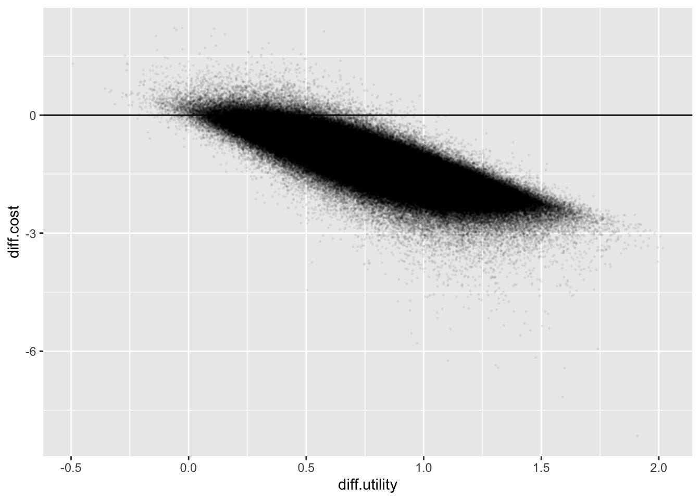

Show the code
library('rjags')
library('jagshelper')
library('jagsUI')
library('dplyr')
library('ggplot2')
library('stringr')
library('tidyverse')
library('matrixcalc')
library('LaplacesDemon') # for Dirichlet distributionThis document reproduces and elaborates on the Markov Model estimated by Bayesian methods in section 10.4 of the text Evidence Synthesis for Decision Making in Healthcare by Nicky J. Welton, Alexander J. Sutton, Nicola J. Cooper, Keith R. Abrams, and A.E. Ades.
library('rjags')
library('jagshelper')
library('jagsUI')
library('dplyr')
library('ggplot2')
library('stringr')
library('tidyverse')
library('matrixcalc')
library('LaplacesDemon') # for Dirichlet distributionThis code contains a number of helper functions that are used throughout the document.
# Format Data into 3D Array for JAGS
matrix_list_to_3d_array <- function(matrix_list){
d <- matrix_list[[1]] %>% dim # !!! assert that all matrices have the same dimensions
I <- length(matrix_list)
J <- d[1]
K <- d[2]
A <- structure(.Data=rep(-1, I*J*K), .Dim=c(I,J,K))
for (i in 1:I){
for (j in 1:J){
for (k in 1:K){
A[i,j,k] <- matrix_list[[i]][j,k]
}
}
}
return(A)
}
# Function to extract arrays from JAGS summary and reformat
# This is really just some fancy pivoting; there must be an easier way.
extract_arrays <- function(my_smry){
row_names <- dimnames(my_smry)[[1]]
is_array <- row_names %>% grepl("[", ., fixed=TRUE)
df <- row_names[is_array] %>%
gsub("]", '', .) %>%
strsplit("[", fixed=TRUE) %>%
do.call('rbind', .) %>%
data.frame %>%
setNames(nm=c('var', 'idx_str'))
df['ndim'] <- strsplit(df[['idx_str']], ',') %>%
sapply(length)
array_dims <- df %>%
group_by(var) %>%
summarize(
dim_str=max(idx_str),
dims=str_split(dim_str, ',') %>% lapply(as.numeric),
ndims=length(dims[[1]])
)
get_row_info <- function(row){
sprintf("%0.2f (%0.2f, %0.2f)", row['mean'], row['2.5%'], row['97.5%'])
}
results = list()
for (r in 1:nrow(array_dims)){
var <- array_dims[[r, 'var']]
dims <- array_dims[r, ][['dims']][[1]]
struc <- array(rep("foo", prod(dims)), dim=dims) # structure(.Data=rep("foo", prod(dims)), .Dim=dims)
if (length(dims) == 1){ # extract single-row dataframe
for (i in 1:dims[1]){
key <- sprintf("%s[%d]", var, i)
struc[i] <- get_row_info(my_smry[key,])
}
}
if (length(dims) == 2){ # extract dataframe
for (i in 1:dims[1]){
for (j in 1:dims[2]){
key <- sprintf("%s[%d,%d]", var, i, j)
struc[i,j] <- get_row_info(my_smry[key,])
}
}
}
if (length(dims) == 3){ # extract list of dataframes
for (i in 1:dims[1]){
for (j in 1:dims[2]){
for (k in 1:dims[3]){
key <- sprintf("%s[%d,%d,%d]", var, i, j, k)
struc[i,j,k] <- get_row_info(my_smry[key,])
}
}
}
}
results[[var]] <- struc
}
return(results)
}
# function for plotting multinomial Distributions
multi_plot <- function(sim_data){
df <- as.data.frame(t(simulated_data))
colnames(df) <- c("state_STW", "state_UTW", "state_Hex", "state_Pex", "state_TF") # Name categories
df$simulation_id <- 1:nrow(df) # Add simulation ID
# 3. Reshape the Data for ggplot
df_long <- df %>%
tidyr::pivot_longer(
cols = starts_with("state"),
names_to = "state",
values_to = "count"
)
df_long <- df_long %>%
mutate(count = count/n_trials) # Convert counts to proportions
# 4. Plotting with ggplot2
ggplot(df_long, aes(x = count)) +
geom_histogram(aes(y = after_stat(density)),bins = 15, fill = "lightgrey", color = "black") + #histogram for each category
geom_density(aes(y = ..density..), color = "red", linewidth = 0.5) + # density line
facet_wrap(~ state, scales = "free") + # facetting for each category
labs(
title = "Marginal Distributions of Multinomial States",
x = "Count",
y = "Frequency"
)
}
# Function to construct the transition probability matrix
tp_matrix <- function(mean_dat,states){
m <- matrix(mean_dat, nrow = 4., ncol = 5, byrow = FALSE)
m <- rbind(m, c(0,0,0,0,1))
rownames(m) <- names(states)
colnames(m) <- names(states)
round(m,2)
}
# Function to compute the probability of being in each state at time t
prob_at_time <- function(matrix, time, i_state){
u <- i_state
index_eq_1 <- which(u == 1)
m <- matrix.power(matrix, time)
u_t <- u %*% m # Distribution at time t
rownames(u_t) <- names(states)[index_eq_1]
round(u_t,2)
}
# Compute the expected time markov chain spends in state s,
# assuming it began in state si = c(1,0,0,0,0) (i.e. STW)
# tpm - the transition probability matrix
# n - the number of time periods
# s - the state of interest
time_in_state <- function(tpm, n, s){
state_prob <- vector("numeric", length = n)
index_eq_1 <- which(s == 1)
si <- c(1,0,0,0,0)
for (i in 1:n) {
m <- si %*% matrix.power(tpm, i)
state_prob[i] <- m[index_eq_1]
}
Total_state_time <- sum(state_prob)
round(Total_state_time,2)
}The data used in this example originates from the randomized trial conducted by Kavuru et al. (2000) comparing the two treatments, Seretide and Fluticasone, for asthma management. The data is presented in the text and in the paper by Briggs et al. (2003) where state transitions were observed over a 12-week follow-up period. This data was also reported in the paper by Kavuru et al. (2000) and in Table 10.3 of the text.
states <- c(
'STW'='sucessfully treated week',
'UTW'='unsucessfully treated week',
'Hex'='hospital-managed exacerbation',
'Pex'='primary care-managed exacerbation',
'TF'='treatment failure'
)
treatments = c('Seretide', 'Fluticasone')
seretide_transitions <- matrix( c(
210, 60, 0, 1, 1,
88,641, 0, 4,13,
0, 0, 0, 0, 0,
1, 0, 0, 0, 1),
nrow=4, byrow=TRUE,
dimnames=list(names(states)[1:4], names(states)))
fluticasone_transitions <- matrix( c(
66, 32, 0, 0, 2,
42,752, 0, 5,20,
0, 0, 0, 0, 0,
0, 4, 0, 1, 0),
nrow=4, byrow=TRUE,
dimnames=list(names(states)[1:4], names(states)))Look at Seretide Transitions
seretide_transitions STW UTW Hex Pex TF
STW 210 60 0 1 1
UTW 88 641 0 4 13
Hex 0 0 0 0 0
Pex 1 0 0 0 1Look at Flucticasone Transitions
fluticasone_transitions STW UTW Hex Pex TF
STW 66 32 0 0 2
UTW 42 752 0 5 20
Hex 0 0 0 0 0
Pex 0 4 0 1 0JAGS requires that the data be reformatted into lists.
transition_tables <- list(
seretide_transitions,
fluticasone_transitions
)
data_dimensions <- c(
length(transition_tables),
nrow(transition_tables[[1]]),
ncol(transition_tables[[1]])
)
data <- list(
r=matrix_list_to_3d_array(transition_tables),
prior=structure(.Data=rep(1, prod(data_dimensions)),.Dim=data_dimensions), # !!! You can use fractional pseudocounts, like 0.1
n=transition_tables %>% sapply(rowSums) %>% matrix(nrow=2, byrow=TRUE) # row sums of transition tables
)The following block of code specifies the Bayesian model in the Winbugs language for the JAGS engine.
model_code <- "
# Model
model{
# Data analysis
for (tmt in 1:2){ # Treatments tmt=1 (Seretide), tmt=2 (Fluticasone)
for (i in 1:4){ # There are 4 non-absorbing health states
r[tmt,i,1:5] ~ dmulti(pi[tmt,i,1:5],n[tmt,i]) # Multinomial data
pi[tmt,i,1:5] ~ ddirch(prior[tmt,i,1:5]) # Dirichlet prior for probs.
}
}
# Calculating summaries from a decision model
for (tmt in 1:2){
for (i in 1:5){ s[tmt,i,1]<- equals(i,1) } # Initialise starting state: 1 in STW, 0 in all other states
for (i in 1:4){
for (t in 2:13){
s[tmt,i,t] <- inprod(s[tmt,1:4,t-1], pi[tmt,1:4,i]) # Run the model for 12 cycles.
# s[tmt,i,t] = no. in state i at time t under treatment tmt
}
E[tmt,i] <- sum(s[tmt,i,2:13]) # Sum up time spent in state i
}
E[tmt,5] <- 12 - sum(E[tmt,1:4]) # Time in TF = 12 minus time in other states.
}
for (i in 1:5){
D[i] <- E[1,i] - E[2,i] # Additional time in state i under Seretide rather than FT
prob[i] <- step(D[i]) # Indicates whether Seretide gives longer time in state i
}
}
" %>% textConnection
initial_values <- list(
# Inits
list(pi=structure(
.Data=c(.6,.1,.1,.1,.1, .1,.6,.1,.1,.1, .1,.1,.6,.1,.1, .1,.1,.1,.6,.1,
.6,.1,.1,.1,.1, .1,.6,.1,.1,.1, .1,.1,.6,.1,.1, .1,.1,.1,.6,.1),
.Dim=c(2,4,5))
) #,
# Alternative Inits
# list(pi=structure(
# .Data=rep(.2, 2*4*5 ),
# .Dim=c(2,4,5))
# )
)
parameters_to_save <- c("pi", "s", "E", "D", "prob")The following code runs the JAGS model using the jagsUI package.
The n.iter parameter specifies the total number of iterations to run, including both adaptation and burn-in phases.
The n.adapt parameter specifies the number of iterations to use for the adaptation phase. This is an initial sampling phase during which the sampler adapts its behavior to maximize its efficiency (e.g. a Metropolis-Hastings random walk algorithm may change its step size). The sequence of samples generated during this adaptive phase is not a Markov chain, and therefore may not be used for posterior inference on the model.
The n.burnin parameter specifies the number of iterations to discard as burn-in, which is used to allow the Markov chain to converge to its stationary distribution.
#jags_results <- jags(data = data,
#inits = initial_values,
#parameters.to.save = parameters_to_save,
#model.file = model_code,
#n.chains = length(initial_values),
#n.adapt = 100,
#n.iter = 1200000,
#n.burnin = 20000,
#verbose = TRUE)This section works directly with the jags_results object to pick out the transition probabilities.
res_pi <- jags_results$samples[[1]][, grepl("^pi\\[", dimnames(jags_results$samples[[1]])[[2]])]smry <- summary(jags_results)
round(head(smry),3) mean sd 2.5% 25% 50% 75% 97.5% Rhat n.eff overlap0 f
pi[1,1,1] 0.762 0.026 0.710 0.745 0.762 0.779 0.810 NA 1 0 1
pi[2,1,1] 0.638 0.047 0.544 0.607 0.639 0.670 0.727 NA 1 0 1
pi[1,2,1] 0.119 0.012 0.096 0.110 0.118 0.126 0.143 NA 1 0 1
pi[2,2,1] 0.052 0.008 0.038 0.047 0.052 0.057 0.068 NA 1 0 1
pi[1,3,1] 0.200 0.163 0.006 0.069 0.159 0.293 0.601 NA 1 0 1
pi[2,3,1] 0.200 0.163 0.006 0.069 0.159 0.293 0.603 NA 1 0 1This section reproduces the summary of the results shown in Table 3 (Seretide) and Table 4 (Fluctisone) of the text, and in the paper by Briggs et al.
array_list <- extract_arrays(smry)TP_S <- array_list$pi[1,,] %>% data.frame(row.names=names(states)[1:4]) %>% setNames(nm=names(states))
TP_S STW UTW Hex Pex
STW 0.76 (0.71, 0.81) 0.22 (0.17, 0.27) 0.00 (0.00, 0.01) 0.01 (0.00, 0.02)
UTW 0.12 (0.10, 0.14) 0.85 (0.83, 0.88) 0.00 (0.00, 0.00) 0.01 (0.00, 0.01)
Hex 0.20 (0.01, 0.60) 0.20 (0.01, 0.60) 0.20 (0.01, 0.60) 0.20 (0.01, 0.60)
Pex 0.29 (0.04, 0.64) 0.14 (0.00, 0.46) 0.14 (0.00, 0.46) 0.14 (0.00, 0.46)
TF
STW 0.01 (0.00, 0.02)
UTW 0.02 (0.01, 0.03)
Hex 0.20 (0.01, 0.60)
Pex 0.29 (0.04, 0.64)TP_F <- array_list$pi[2,,] %>% data.frame(row.names=names(states)[1:4]) %>% setNames(nm=names(states))
TP_F STW UTW Hex Pex
STW 0.64 (0.54, 0.73) 0.31 (0.23, 0.41) 0.01 (0.00, 0.03) 0.01 (0.00, 0.03)
UTW 0.05 (0.04, 0.07) 0.91 (0.89, 0.93) 0.00 (0.00, 0.00) 0.01 (0.00, 0.01)
Hex 0.20 (0.01, 0.60) 0.20 (0.01, 0.60) 0.20 (0.01, 0.60) 0.20 (0.01, 0.60)
Pex 0.10 (0.00, 0.34) 0.50 (0.21, 0.79) 0.10 (0.00, 0.34) 0.20 (0.03, 0.48)
TF
STW 0.03 (0.01, 0.07)
UTW 0.03 (0.02, 0.04)
Hex 0.20 (0.01, 0.60)
Pex 0.10 (0.00, 0.34)This section of code extracts the transition probabilities in a form useful for the subsequent calculations.
smry_df <- smry |> as.data.frame()
### Transition Probabilities for Seretide
# Note the `|>` operator does not work in this section of code.
mean_s_df<-smry_df %>%
filter(str_starts(rownames(.), "pi\\[1")) %>% select(mean)
s_matrix <- tp_matrix(mean_s_df$mean, states)
#s_matrix
### Transition Probabilities for Fluticasone
# Note the `|>` operator does not work in this section of code.
mean_f_df<-smry_df %>%
filter(str_starts(rownames(.), "pi\\[2")) %>% select(mean)
f_matrix <- tp_matrix(mean_f_df$mean, states)
#f_matrixFor an absorbing Markov Chain, the fundamental matrix, \(N\), gives the expected number of times the process is in each transient state before absorption occurs. \(N\) is calculated by the formula \(N = (I - Q)^{-1}\), where \(I\) is the identity matrix and \(Q\) is the sub-matrix of transition probabilities for non-absorbing states.
The first step in computing \(N\) is to partition the transition matrix into sub matrices of transient \(Q_\), and absorbing \(R\) transition probabilities.

Extract the Q matrix
Q_s <- s_matrix[1:4, 1:4] # Extract the sub-matrix of transition probabilities for non-absorbing states
rownames(Q_s) <- names(states)[1:4]
colnames(Q_s) <- names(states)[1:4]# Set the row and column names to the state names
round(Q_s,3) STW UTW Hex Pex
STW 0.76 0.22 0.00 0.01
UTW 0.12 0.85 0.00 0.01
Hex 0.20 0.20 0.20 0.20
Pex 0.29 0.14 0.14 0.14Extract the Fundamental Matrix, N. Each entry \(n_ij\) of N gives the expected number of times that the process is in the transient state \(s_j\) if it is started in the transient state \(s_i\). For example, given that the process starts in state STW, the expected number of times the process is in each transient state before absorption occurs is given by the first row of \(N\). .
I <- diag(4) # Identity matrix of size 4
N_s <- solve(I - Q_s) # Fundamental matrix for Seretide
round(N_s,3) STW UTW Hex Pex
STW 20.041 30.103 0.106 0.608
UTW 16.797 31.992 0.103 0.591
Hex 12.074 20.185 1.371 0.694
Pex 11.458 18.645 0.276 1.577Q_f <- f_matrix[1:4, 1:4] # Extract the sub-matrix of transition probabilities for non-absorbing states
rownames(Q_f) <- names(states)[1:4]
colnames(Q_f) <- names(states)[1:4]# Set the row and column names to the state names
round(Q_f,3) STW UTW Hex Pex
STW 0.64 0.31 0.01 0.01
UTW 0.05 0.91 0.00 0.01
Hex 0.20 0.20 0.20 0.20
Pex 0.10 0.50 0.10 0.20The entry \(n_ij\) of N gives the expected number of times that the process is in the transient state \(s_j\) if it is started in the transient state \(s_i\). .
I <- diag(4) # Identity matrix of size 4
N_f <- solve(I - Q_f) # Fundamental matrix for Flucticasone
round(N_f,3) STW UTW Hex Pex
STW 6.392 24.653 0.133 0.421
UTW 3.964 27.304 0.102 0.416
Hex 3.518 18.608 1.371 0.619
Pex 3.717 22.473 0.251 1.640The expected time to absorption from each transient state is given by the formula \(t = Nc\), where \(c\) is a vector of ones. This means that the expected time to absorption from each transient state is the sum of the expected number of times the process is in each transient state before absorption occurs.
# Calculation for Seretide
c <- c(1,1,1,1)
E_s <- N_s %*% c # Expected time to absorption for Seretide
colnames(E_s) <- "Seretide"
#round(E_s,2)
#| code-fold: true
#| code-summary: "Show the code"
#Calculation for Fluticasone
E_f <- N_f %*% c # Expected time to absorption for Flucticasone
colnames(E_f) <- "Flucticasone"
#round(E_f,2)
# Combine the expected times to absorption for both treatments
E <- cbind(E_s, E_f) %>% data.frame()
print("Expected Time to Absorption")[1] "Expected Time to Absorption"round(E,2) Seretide Flucticasone
STW 50.86 31.60
UTW 49.48 31.79
Hex 34.32 24.12
Pex 31.96 28.08Probability of being in each state at time t starting from state STW as given by \(P(s = i | time = t) = uP^t\) where \(u\) is the initial state vector, and \(P\) is the transition probability matrix.
# Seretide
t <- 12
u <- c(1,0,0,0,0) # Initial state vector, starting in STW
spt <- prob_at_time(s_matrix, t, u)
#Flucticasone
t <- 12
u <- c(1,0,0,0,0) # Initial state vector, starting in STW
fpt <- prob_at_time(f_matrix, t, u)
p_in_state <- rbind(spt,fpt)
rownames(p_in_state) <- c("Seretide start STW", "Fluticasone start STW")
p_in_state STW UTW Hex Pex TF
Seretide start STW 0.29 0.50 0 0.01 0.20
Fluticasone start STW 0.09 0.57 0 0.01 0.32This section computes the expected time the markov chain will spend in state s, assuming that it begins in STW.
# Seretide
t <- 12
u <- c(1,0,0,0,0) # Initial state vector, starting in STW
s_time <- time_in_state(tpm = s_matrix, n = t, s = u)
# Flucticasone
t <- 12
u <- c(1,0,0,0,0) # Initial state vector, starting in STW
f_time <- time_in_state(tpm = f_matrix, n = t, s = u)
rbind(s_time, f_time) %>%
data.frame(row.names=c("Seretide", "Fluticasone")) %>%
setNames("STW") %>%
round(2) STW
Seretide 4.97
Fluticasone 2.57array_list$E %>% data.frame(row.names=treatments) %>% setNames(nm=states) sucessfully treated week unsucessfully treated week
Seretide 5.03 (4.25, 5.87) 5.75 (4.94, 6.53)
Fluticasone 2.64 (1.92, 3.54) 7.17 (6.03, 8.15)
hospital-managed exacerbation primary care-managed exacerbation
Seretide 0.05 (0.01, 0.15) 0.10 (0.04, 0.21)
Fluticasone 0.07 (0.01, 0.21) 0.12 (0.04, 0.26)
treatment failure
Seretide 1.07 (0.61, 1.70)
Fluticasone 2.00 (1.19, 3.12)Compute cost for each simulated patient. This could be done in JAGS, but here I just add the costs and utilities for the time spent in each state in R from the jags results. I made up values for costs and utilities per day in each state.
# I just made these numbers up:
cost_per_day <- c("STW"=0.05, "UTW"=0.3, "Hex"=5.0, "Pex"=1.0, "TF"=0.8)
utility_per_day <- c("STW"=1.0, "UTW"=0.8, "Hex"=0.3, "Pex"=0.6, "TF"=0.5) # QALD values (on the scale of days rather than years)
# Extract columns from JAGS results and do a matrix * vector multiplication to find incremental cost and utility. Compute the difference between treatments for both cost and utility, and plot a scattergram.
# Expected days in each state under Seretide
E1_cols <- grepl("^E\\[1", dimnames(jags_results$samples[[1]])[[2]])
E1 <- jags_results$samples[[1]][,E1_cols]
# Expected days in each state under Fluticasone
E2_cols <- grepl("^E\\[2", dimnames(jags_results$samples[[1]])[[2]])
E2 <- jags_results$samples[[1]][,E2_cols]
sim_patient_results <- data.frame(
cost1 = E1 %*% cost_per_day,
utility1 = E1 %*% utility_per_day,
cost2 = E2 %*% cost_per_day,
utility2 = E2 %*% utility_per_day
) %>% mutate(diff.cost = cost1 - cost2, diff.utility = utility1 - utility2)sim_patient_results %>%
ggplot(aes(x=diff.utility, y=diff.cost)) +
geom_point(size=0.25, alpha=0.05) +
geom_abline(slope=0, intercept=0)
Briggs AH, Ades AE, Price MJ. Probabilistic Sensitivity Analysis for Decision Trees with Multiple Branches: Use of the Dirichlet Distribution in a Bayesian Framework. Medical Decision Making, 2003
M Kavuru, J Melamed, G Gross, C Laforce, K House, B Prillaman, L Baitinger, A Woodring, T Shah, Salmeterol and fluticasone propionate combined in a new powder inhalation device for the treatment of asthma: a randomized, double-blind, placebo-controlled trial